Each dashboard is a single self-contained HTML page. Chart.js loads from the jsDelivr CDN, so an internet connection is needed; the data is inline. Every page has filters, a 'what this shows' note, key takeaways, and source/period notes. Static PNGs are in charts/. Category change: AMFI moved to the revised SEBI scheme-category list from Aug-2026 reports. Line items before and after the break are not like-for-like; totals are compared across it and the break is marked on the charts.
The main dashboard opens from this folder as main_dashboard.html, a copy of /workspace/amfi/amfi_dashboard.html.
Average AUM – Fund-wise (avg_aum_fundwise)
Period: Q/E Dec-24 to Q/E Sep-26 (Oct–Dec 2024 to Jul–Sep 2026, 8 quarters)
- Kotak MF is ranked #5 in Q/E Sep-26 (Jul–Sep 2026) with QAAUM of ₹6.14 L cr, a 7.04% share (-6 bps QoQ; AAUM +4.0% QoQ, +10.5% YoY vs industry +13.1%).
- Over 8 quarters Kotak's share moved from 7.12% (Q/E Dec-24, rank #5) to 7.04% – -8 bps.
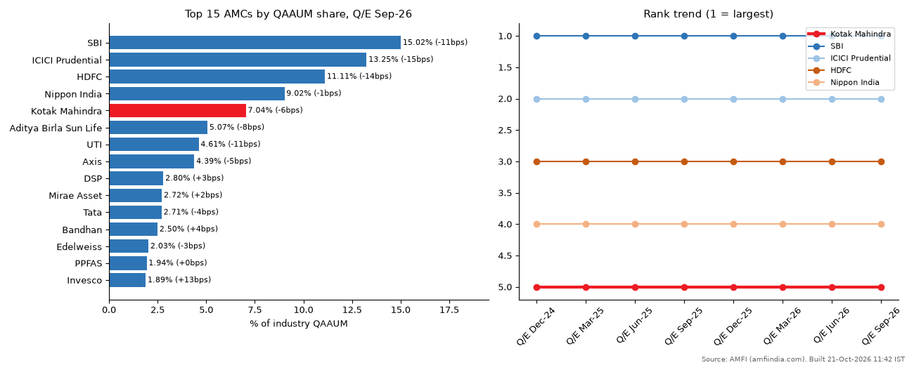
Average AUM – Scheme-wise, Category-wise (avg_aum_schemewise_categorywise)
Period: Q/E Dec-24 to Q/E Sep-26 (8 quarters)
- Direct plans are 47.3% of Kotak's plan-split QAAUM in Q/E Sep-26 (direct ÷ direct+regular, ETFs excluded) vs 44.4% for the industry; Kotak's was 46.5% in Q/E Dec-24.
- Kotak's regular-plan (distributor) QAAUM is ₹3.05 L cr vs ₹2.74 L cr direct; regular grew +10.3% YoY vs direct +7.2%.
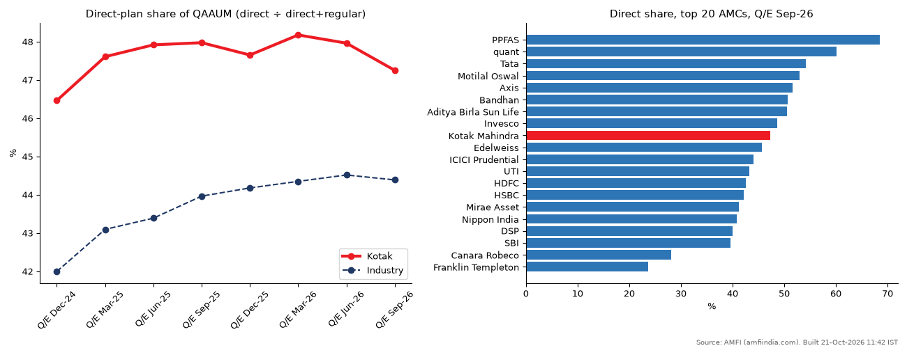
Classified Average AUM – Scheme Category-wise, All MFs (classified_aaum_scheme_categorywise)
Period: Jul-25 to Sep-26 (15 months, monthly)
- Direct plans are 48.8% of industry AAUM in Sep-26 (incl. domestic FoF), against 47.7% a year earlier and 47.7% in Jul-25. Regular (distributor) AAUM is ₹45.80 L cr, +10.5% YoY, vs direct +15.6%.
- Within regular plans, associate (sponsor-group) distributors hold 11.6%; non-associate distributors hold 88.4% (₹40.47 L cr).
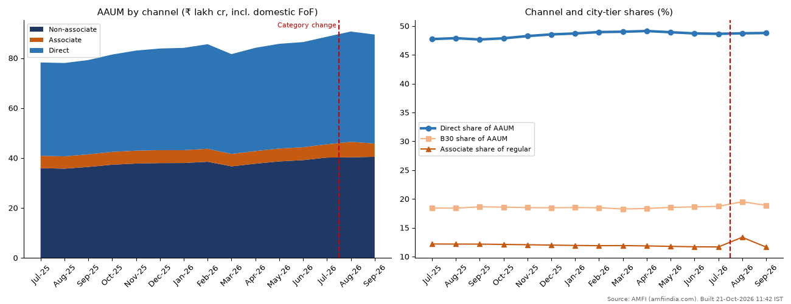
Classified Average AUM – State-wise, All MFs (classified_aaum_statewise)
Period: Jul-25 to Sep-26 (15 months, monthly)
- Maharashtra has ₹34.67 L cr of AAUM in Sep-26, 39.8% of the industry and #1 by a wide margin. It grew +9.9% YoY, while the rest of India grew +13.4%.
- The top 5 states (Maharashtra, New Delhi, Karnataka, Gujarat, West Bengal) hold 68.3% of AAUM. Industry AAUM (excl. domestic FoF) was ₹87.09 L cr, +12.0% YoY.
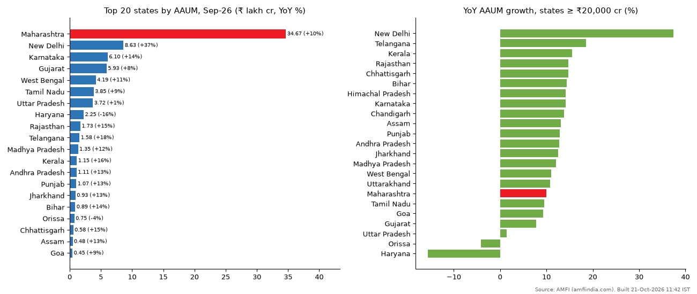
Bifurcation of AUM under Direct Plan (bifurcation_aaum_direct_plan)
Period: Jan-24 to Jul-26 (31 months, AMFI's full history)
- Direct-plan AAUM reached ₹42.11 L cr in Jul-26, up from ₹23.75 L cr in Jan-24 (25.8% CAGR over 2.5 years; +14.5% YoY).
- Do-it-yourself investors (AMC sites, apps, platforms) hold 83.1% of direct AAUM (₹35.01 L cr). Advisor-led direct (RIA 14.5% + PMS 2.4%) makes up the rest.
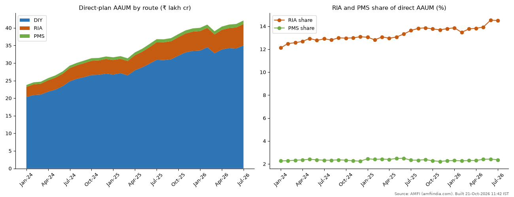
AUM – Category / Age-wise & Folio Data: investor class × category (aum_investor_class_folio)
Period: Q/E Sep-24 to Q/E Jun-26 (8 quarters)
- Individuals (retail + HNI) own 63.6% of AUM at Q/E Jun-26 (excl. domestic FoF), against 64.0% at Q/E Sep-24. Retail is 28.2%, HNI 35.4%, corporates 35.1%.
- Retail and HNI AUM grew +12.3% and +13.3% YoY, against +7.6% for corporates.
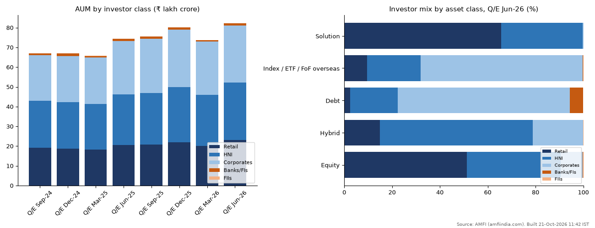
AUM – Category / Age-wise & Folio Data: age-wise AUM (aum_agewise)
Period: Q/E Sep-24 to Q/E Jun-26 (8 quarters)
- 56.2% of equity-scheme AUM has been held for more than 2 years (Q/E Jun-26), and 73.5% for more than 1 year. Only 6.3% is under 3 months old.
- Retail is the stickiest: 62.6% of retail equity AUM is older than 24 months, against 57.0% for HNI and 36.6% for corporates.
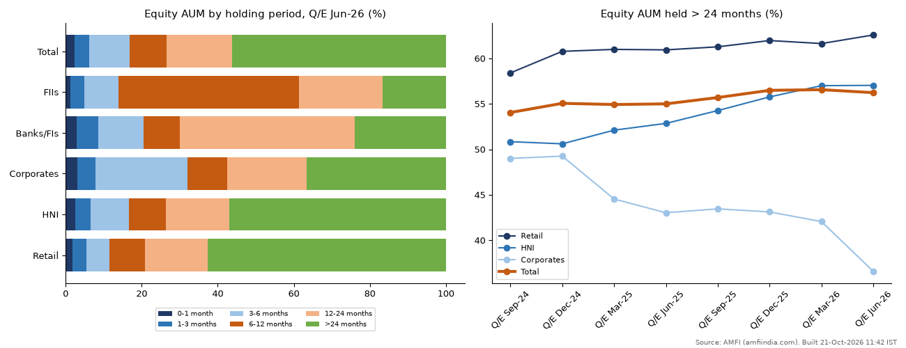
AUM-AAUM Disclosure – Geography (aum_disclosure_geography)
Period: Q/E Sep-24 to Q/E Jun-26 (8 quarters)
- The top 5 cities hold 56.9% of industry AUM at Q/E Jun-26, and the top 35 hold 75.5%. Mumbai alone is 26.9% and Delhi 16.5%.
- Mapping break: AMFI's geography file changed its city mapping from Dec-2025 (district-style names such as Palghar, Gurugram and North 24 Parganas appear from Mar-2026). 'Other cities' fell from 18.7% (Q/E Sep-25) to 11.6%, and the top 5 rose from 52.9% to 56.9%. Read changes across the break as mostly re-mapping, not money moving.
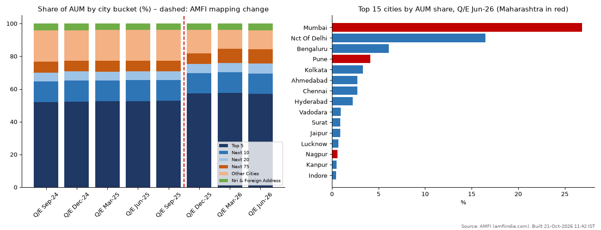
AUM-AAUM Disclosure – Category-wise (aum_disclosure_categorywise)
Period: Q/E Sep-24 to Q/E Jun-26 (quarters ended Sep-2024 to Jun-2026, 8 quarters)
- Industry quarter-end AUM was ₹82.22 L cr at Q/E Jun-26: +11.5% QoQ and +10.5% YoY.
- Equity-oriented schemes are 45.4% of AUM (46.4% at Q/E Sep-24); hybrid 13.9%, debt 21.1%.
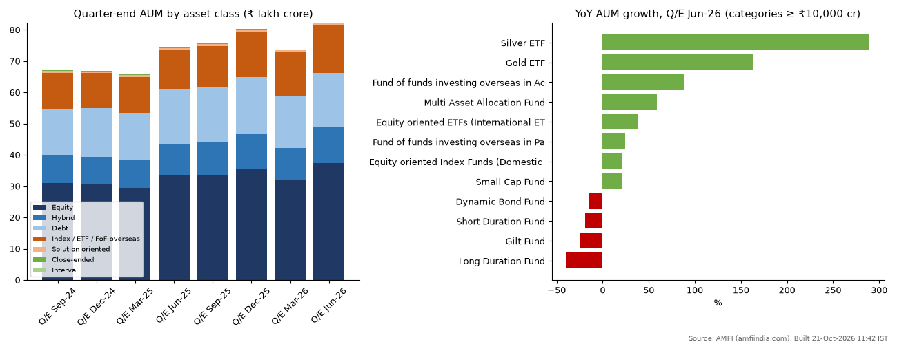
AMFI Monthly Reports (amfi_monthly_report)
Period: Mar-24 to Sep-26 (31 months)
- Industry AUM went from ₹53.40 L cr (Mar-24) to ₹82.64 L cr (Sep-26), +55% in 30 months. Average AUM in Sep-26 was ₹87.09 L cr, because the Sep-26 quarter-end debt outflow (-₹1,83,156 cr) depressed closing AUM.
- Open-ended equity collected ₹9.69 L cr of net inflows over the 31 months, positive every month. The peak was Jul-25 (₹42,702 cr); Sep-26 saw ₹38,307 cr.
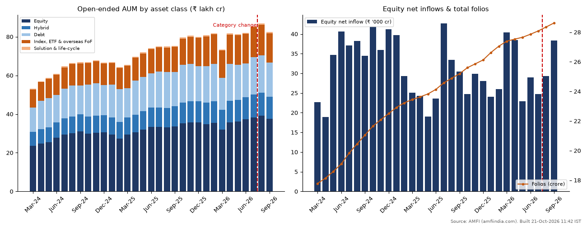
AMFI Quarterly Data – MCR & New Schemes sheets (amfi_quarterly_data)
Period: Q/E Sep-24 to Q/E Jun-26 (8 quarterly issues)
- Over the 8 quarters (Q/E Sep-24 to Q/E Jun-26) the industry launched 475 new schemes that raised ₹1,49,682 cr. The peak was Q/E Sep-24 (₹44,955 cr, 60 schemes); Q/E Jun-26 raised just ₹1,759 cr from 31 schemes.
- Sectoral/thematic NFOs took 49.0% of all NFO money (₹73,344 cr). Equity NFOs as a whole raised ₹93,041 cr.
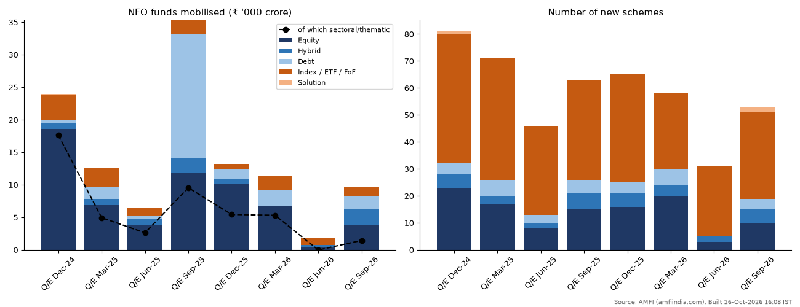
- Average AUM – Scheme-wise, Type-wise: same 65,847 scheme rows as the category-wise file, but the 'Scheme type' field is blank in all 8 quarters, so there is nothing to group by. It is covered by the Scheme-wise AAUM dashboard.
- Classified AAUM – Scheme-wise links: AMFI hosts only links to each AMC's own site (Aug-2026: 33 of 57 MFs have a link; Kotak's points to a web page). There are no numbers to chart.
Suggested next captures: Kotak-only (MF_ID) state-wise and channel-wise classified AAUM from the same APIs (they would allow Kotak vs industry state and channel share), older fund-wise quarters for a longer rank history, and Aug/Sep-2026 direct-plan bifurcation once published.